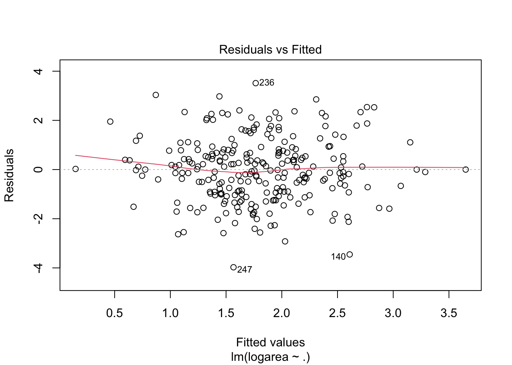
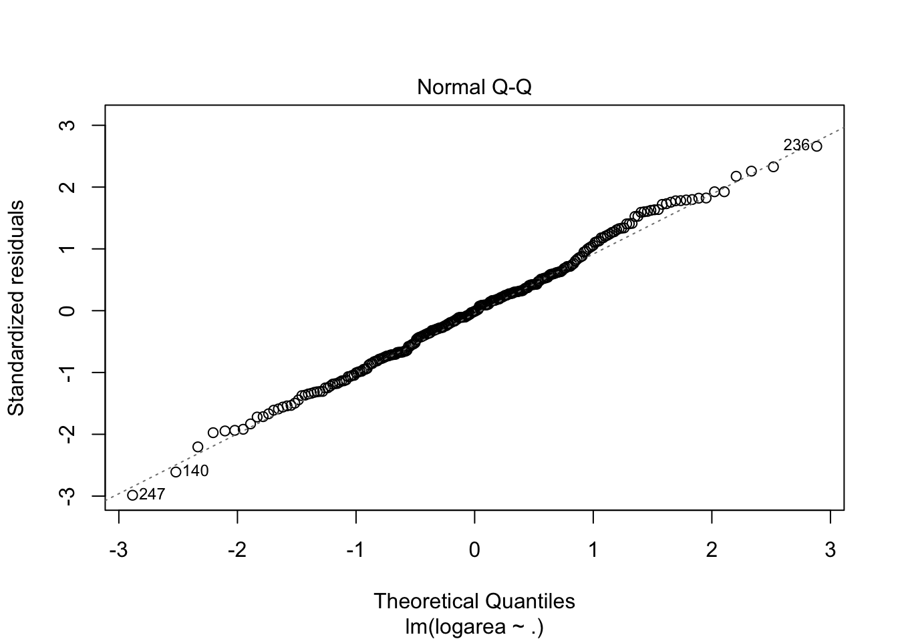
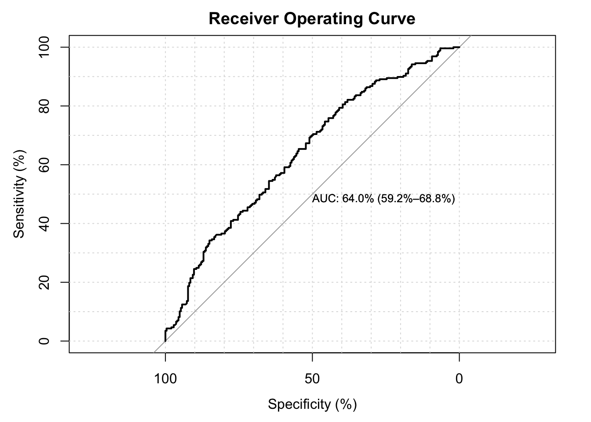
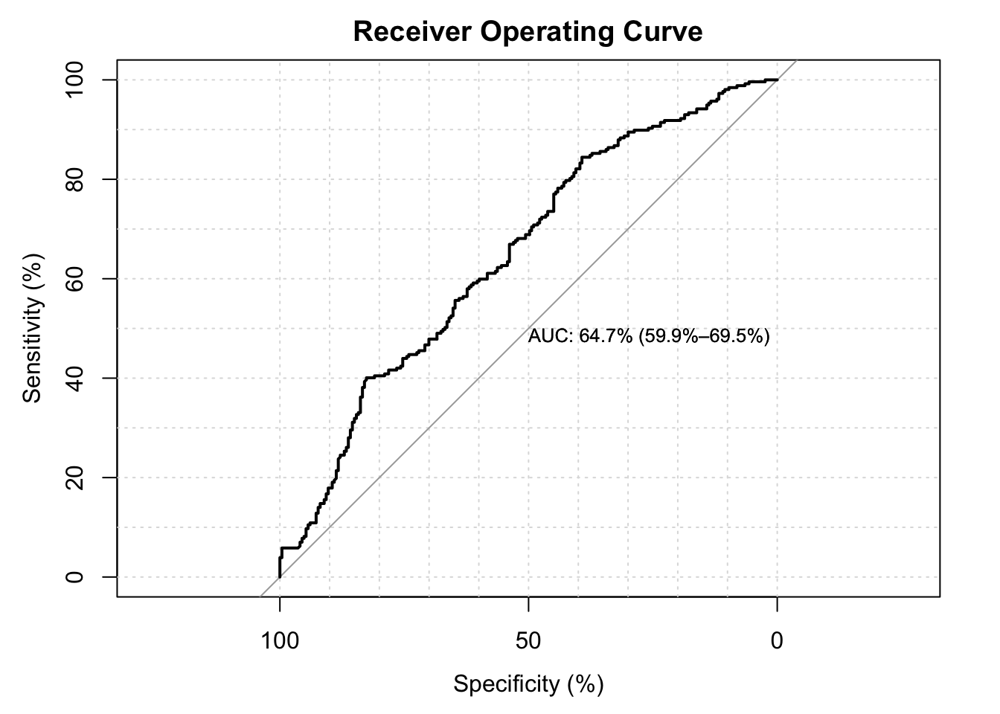

Analysis
Linear Regression Analysis
# Fit linear regression model to area>0 since this is normally distributed
area_posit <- fire[which(fire$area>0),]
summary(area_posit)## X Y month day FFMC DMC DC
## Min. :1.000 Min. :2.000 Length:270 Length:270 Min. :63.50 Min. : 3.2 Min. : 15.3
## 1st Qu.:3.000 1st Qu.:4.000 Class :character Class :character 1st Qu.:90.33 1st Qu.: 82.9 1st Qu.:486.5
## Median :5.000 Median :4.000 Mode :character Mode :character Median :91.70 Median :111.7 Median :665.6
## Mean :4.807 Mean :4.367 Mean :91.03 Mean :114.7 Mean :570.9
## 3rd Qu.:7.000 3rd Qu.:5.000 3rd Qu.:92.97 3rd Qu.:141.3 3rd Qu.:721.3
## Max. :9.000 Max. :9.000 Max. :96.20 Max. :291.3 Max. :860.6
## ISI temp RH wind rain area season
## Min. : 0.800 Min. : 2.20 Min. :15.00 Min. :0.400 Min. :0.00000 Min. : 0.09 autumn:102
## 1st Qu.: 6.800 1st Qu.:16.12 1st Qu.:33.00 1st Qu.:2.700 1st Qu.:0.00000 1st Qu.: 2.14 spring: 24
## Median : 8.400 Median :20.10 Median :41.00 Median :4.000 Median :0.00000 Median : 6.37 summer:125
## Mean : 9.177 Mean :19.31 Mean :43.73 Mean :4.113 Mean :0.02889 Mean : 24.60 winter: 19
## 3rd Qu.:11.375 3rd Qu.:23.40 3rd Qu.:53.00 3rd Qu.:4.900 3rd Qu.:0.00000 3rd Qu.: 15.42
## Max. :22.700 Max. :33.30 Max. :96.00 Max. :9.400 Max. :6.40000 Max. :1090.84
## season.cat logarea
## Min. :0.00 Min. :-2.4079
## 1st Qu.:1.00 1st Qu.: 0.7608
## Median :1.00 Median : 1.8516
## Mean :1.43 Mean : 1.8448
## 3rd Qu.:2.00 3rd Qu.: 2.7358
## Max. :3.00 Max. : 6.9947area_posit## X Y month day FFMC DMC DC ISI temp RH wind rain area season season.cat logarea
## 139 9 9 jul tue 85.8 48.3 313.4 3.9 18.0 42 2.7 0 0.36 summer 1 -1.02165125
## 140 1 4 sep tue 91.0 129.5 692.6 7.0 21.7 38 2.2 0 0.43 autumn 2 -0.84397007
## 141 2 5 sep mon 90.9 126.5 686.5 7.0 21.9 39 1.8 0 0.47 autumn 2 -0.75502258
## 142 1 2 aug wed 95.5 99.9 513.3 13.2 23.3 31 4.5 0 0.55 summer 1 -0.59783700
## 143 8 6 aug fri 90.1 108.0 529.8 12.5 21.2 51 8.9 0 0.61 summer 1 -0.49429632
## 144 1 2 jul sat 90.0 51.3 296.3 8.7 16.6 53 5.4 0 0.71 summer 1 -0.34249031
## 145 2 5 aug wed 95.5 99.9 513.3 13.2 23.8 32 5.4 0 0.77 summer 1 -0.26136476
## 146 6 5 aug thu 95.2 131.7 578.8 10.4 27.4 22 4.0 0 0.90 summer 1 -0.10536052
## 147 5 4 mar mon 90.1 39.7 86.6 6.2 13.2 40 5.4 0 0.95 spring 0 -0.05129329
## 148 8 3 sep tue 84.4 73.4 671.9 3.2 24.2 28 3.6 0 0.96 autumn 2 -0.04082199
## 149 2 2 aug tue 94.8 108.3 647.1 17.0 17.4 43 6.7 0 1.07 summer 1 0.06765865
## 150 8 6 sep thu 93.7 80.9 685.2 17.9 23.7 25 4.5 0 1.12 autumn 2 0.11332869
## 151 6 5 jun fri 92.5 56.4 433.3 7.1 23.2 39 5.4 0 1.19 summer 1 0.17395331
## 152 9 9 jul sun 90.1 68.6 355.2 7.2 24.8 29 2.2 0 1.36 summer 1 0.30748470
## 153 3 4 jul sat 90.1 51.2 424.1 6.2 24.6 43 1.8 0 1.43 summer 1 0.35767444
## 154 5 4 sep fri 94.3 85.1 692.3 15.9 20.1 47 4.9 0 1.46 autumn 2 0.37843644
## 155 1 5 sep sat 93.4 145.4 721.4 8.1 29.6 27 2.7 0 1.46 autumn 2 0.37843644
## 156 7 4 aug sun 94.8 108.3 647.1 17.0 16.4 47 1.3 0 1.56 summer 1 0.44468582
## 157 2 4 sep sat 93.4 145.4 721.4 8.1 28.6 27 2.2 0 1.61 autumn 2 0.47623418
## 158 2 2 aug wed 92.1 111.2 654.1 9.6 18.4 45 3.6 0 1.63 summer 1 0.48858001
## 159 2 4 aug wed 92.1 111.2 654.1 9.6 20.5 35 4.0 0 1.64 summer 1 0.49469624
## 160 7 4 sep fri 92.4 117.9 668.0 12.2 19.0 34 5.8 0 1.69 autumn 2 0.52472853
## 161 7 4 mar mon 90.1 39.7 86.6 6.2 16.1 29 3.1 0 1.75 spring 0 0.55961579
## 162 6 4 aug thu 95.2 131.7 578.8 10.4 20.3 41 4.0 0 1.90 summer 1 0.64185389
## 163 6 3 mar sat 90.6 50.1 100.4 7.8 15.2 31 8.5 0 1.94 spring 0 0.66268797
## 164 8 6 sep sat 92.5 121.1 674.4 8.6 17.8 56 1.8 0 1.95 autumn 2 0.66782937
## 165 8 5 sep sun 89.7 90.0 704.4 4.8 17.8 67 2.2 0 2.01 autumn 2 0.69813472
## 166 6 5 mar thu 84.9 18.2 55.0 3.0 5.3 70 4.5 0 2.14 spring 0 0.76080583
## 167 6 5 aug wed 92.1 111.2 654.1 9.6 16.6 47 0.9 0 2.29 summer 1 0.82855182
## 168 6 5 aug wed 96.0 127.1 570.5 16.5 23.4 33 4.5 0 2.51 summer 1 0.92028275
## 169 6 5 mar fri 91.2 48.3 97.8 12.5 14.6 26 9.4 0 2.53 spring 0 0.92821930
## 170 8 6 aug thu 95.2 131.7 578.8 10.4 20.7 45 2.2 0 2.55 summer 1 0.93609336
## 171 5 4 sep wed 92.9 133.3 699.6 9.2 21.9 35 1.8 0 2.57 autumn 2 0.94390590
## 172 8 6 aug wed 85.6 90.4 609.6 6.6 17.4 50 4.0 0 2.69 summer 1 0.98954119
## 173 7 4 aug sun 91.4 142.4 601.4 10.6 20.1 39 5.4 0 2.74 summer 1 1.00795792
## 174 4 4 sep mon 90.9 126.5 686.5 7.0 17.7 39 2.2 0 3.07 autumn 2 1.12167756
## 175 1 4 aug sat 90.2 96.9 624.2 8.9 14.2 53 1.8 0 3.50 summer 1 1.25276297
## 176 1 4 aug sat 90.2 96.9 624.2 8.9 20.3 39 4.9 0 4.53 summer 1 1.51072194
## 177 6 5 apr thu 81.5 9.1 55.2 2.7 5.8 54 5.8 0 4.61 spring 0 1.52822786
## 178 2 5 aug sun 90.2 99.6 631.2 6.3 19.2 44 2.7 0 4.69 summer 1 1.54543258
## 179 2 5 sep wed 90.1 82.9 735.7 6.2 18.3 45 2.2 0 4.88 autumn 2 1.58514522
## 180 8 6 aug tue 88.8 147.3 614.5 9.0 14.4 66 5.4 0 5.23 summer 1 1.65441128
## 181 1 3 sep sun 92.4 124.1 680.7 8.5 23.9 32 6.7 0 5.33 autumn 2 1.67335124
## 182 8 6 oct mon 84.9 32.8 664.2 3.0 19.1 32 4.0 0 5.44 autumn 2 1.69377906
## 183 5 4 feb sun 86.8 15.6 48.3 3.9 12.4 53 2.2 0 6.38 winter 3 1.85316810
## 184 7 4 oct mon 91.7 48.5 696.1 11.1 16.8 45 4.5 0 6.83 autumn 2 1.92132467
## 185 8 6 aug fri 93.9 135.7 586.7 15.1 20.8 34 4.9 0 6.96 summer 1 1.94017947
## 186 2 5 sep tue 91.0 129.5 692.6 7.0 17.6 46 3.1 0 7.04 autumn 2 1.95160817
## 187 8 6 mar sun 89.3 51.3 102.2 9.6 11.5 39 5.8 0 7.19 spring 0 1.97269117
## 188 1 5 sep mon 90.9 126.5 686.5 7.0 21.0 42 2.2 0 7.30 autumn 2 1.98787435
## 189 6 4 mar sat 90.8 41.9 89.4 7.9 13.3 42 0.9 0 7.40 spring 0 2.00148000
## 190 7 4 mar sun 90.7 44.0 92.4 5.5 11.5 60 4.0 0 8.24 spring 0 2.10900034
## 191 6 5 mar fri 91.2 48.3 97.8 12.5 11.7 33 4.0 0 8.31 spring 0 2.11745961
## 192 2 5 aug thu 95.2 131.7 578.8 10.4 24.2 28 2.7 0 8.68 summer 1 2.16102153
## 193 2 2 aug tue 94.8 108.3 647.1 17.0 24.6 22 4.5 0 8.71 summer 1 2.16447179
## 194 4 5 sep wed 92.9 133.3 699.6 9.2 24.3 25 4.0 0 9.41 autumn 2 2.24177295
## 195 2 2 aug tue 94.8 108.3 647.1 17.0 24.6 22 4.5 0 10.01 summer 1 2.30358459
## 196 2 5 aug fri 93.9 135.7 586.7 15.1 23.5 36 5.4 0 10.02 summer 1 2.30458310
## 197 6 5 apr thu 81.5 9.1 55.2 2.7 5.8 54 5.8 0 10.93 spring 0 2.39151130
## 198 4 5 sep thu 92.9 137.0 706.4 9.2 21.5 15 0.9 0 11.06 autumn 2 2.40333500
## 199 3 4 sep tue 91.0 129.5 692.6 7.0 13.9 59 6.3 0 11.24 autumn 2 2.41947884
## 200 2 4 sep mon 63.5 70.8 665.3 0.8 22.6 38 3.6 0 11.32 autumn 2 2.42657107
## [ reached 'max' / getOption("max.print") -- omitted 208 rows ]mod_lin <- lm(logarea ~X+Y+month+day+FFMC+DMC+DC+ISI+temp+RH+wind+rain+as.factor(season.cat), data=area_posit[c(seq(1,12),15,16)])
summary(mod_lin) # DMC and DC are being statistically significant##
## Call:
## lm(formula = logarea ~ X + Y + month + day + FFMC + DMC + DC +
## ISI + temp + RH + wind + rain + as.factor(season.cat), data = area_posit[c(seq(1,
## 12), 15, 16)])
##
## Residuals:
## Min 1Q Median 3Q Max
## -4.2131 -0.9790 0.0380 0.8145 4.4916
##
## Coefficients: (3 not defined because of singularities)
## Estimate Std. Error t value Pr(>|t|)
## (Intercept) 1.2117947 3.9629695 0.306 0.760033
## X 0.0515407 0.0473061 1.090 0.277001
## Y -0.0944394 0.0960197 -0.984 0.326315
## monthaug 0.7546454 1.3660544 0.552 0.581161
## monthdec 1.9052997 1.1644253 1.636 0.103075
## monthfeb -0.2741962 0.9130864 -0.300 0.764207
## monthjul 0.0373724 1.1677970 0.032 0.974496
## monthjun -0.4647905 1.0983596 -0.423 0.672545
## monthmar -0.4325527 0.8534419 -0.507 0.612730
## monthmay 1.2928830 1.7376890 0.744 0.457578
## monthoct 3.2689080 1.6666212 1.961 0.050970 .
## monthsep 2.0552667 1.5337220 1.340 0.181475
## daymon -0.0005960 0.3603204 -0.002 0.998682
## daysat 0.6039482 0.3413894 1.769 0.078128 .
## daysun 0.4058246 0.3367923 1.205 0.229382
## daythu 0.2295388 0.3752345 0.612 0.541292
## daytue 0.3295887 0.3519106 0.937 0.349906
## daywed 0.0269697 0.3705798 0.073 0.942043
## FFMC 0.0071617 0.0433667 0.165 0.868969
## DMC 0.0094934 0.0028344 3.349 0.000938 ***
## DC -0.0051541 0.0020759 -2.483 0.013706 *
## ISI -0.0309518 0.0372786 -0.830 0.407190
## temp 0.0393276 0.0348704 1.128 0.260504
## RH -0.0004741 0.0100132 -0.047 0.962274
## wind 0.0517875 0.0584917 0.885 0.376822
## rain 0.0457141 0.2420749 0.189 0.850373
## as.factor(season.cat)1 NA NA NA NA
## as.factor(season.cat)2 NA NA NA NA
## as.factor(season.cat)3 NA NA NA NA
## ---
## Signif. codes: 0 '***' 0.001 '**' 0.01 '*' 0.05 '.' 0.1 ' ' 1
##
## Residual standard error: 1.499 on 244 degrees of freedom
## Multiple R-squared: 0.1254, Adjusted R-squared: 0.0358
## F-statistic: 1.4 on 25 and 244 DF, p-value: 0.1036#Fit linear regression again, now without the influential points and outliers
mod_lin2 <- lm(logarea ~ ., data=dat[c(seq(1,12),15,16)])
summary(mod_lin2)##
## Call:
## lm(formula = logarea ~ ., data = dat[c(seq(1, 12), 15, 16)])
##
## Residuals:
## Min 1Q Median 3Q Max
## -3.9746 -0.9080 -0.0007 0.7724 3.5148
##
## Coefficients: (1 not defined because of singularities)
## Estimate Std. Error t value Pr(>|t|)
## (Intercept) 0.987342 4.994567 0.198 0.843467
## X 0.032411 0.044763 0.724 0.469771
## Y -0.101419 0.092957 -1.091 0.276398
## monthaug 1.313931 1.374839 0.956 0.340224
## monthdec 2.022285 1.150576 1.758 0.080135 .
## monthfeb -0.043227 0.925304 -0.047 0.962780
## monthjul 0.789941 1.219786 0.648 0.517883
## monthjun -0.028542 1.132933 -0.025 0.979922
## monthmar -0.119666 0.904959 -0.132 0.894914
## monthmay 1.731173 1.647245 1.051 0.294379
## monthoct 3.860256 1.625441 2.375 0.018372 *
## monthsep 2.582194 1.532596 1.685 0.093368 .
## daymon -0.115957 0.333272 -0.348 0.728206
## daysat 0.525835 0.317920 1.654 0.099489 .
## daysun 0.440884 0.312954 1.409 0.160244
## daythu 0.088689 0.347098 0.256 0.798553
## daytue 0.609855 0.329800 1.849 0.065711 .
## daywed -0.085819 0.340491 -0.252 0.801231
## FFMC 0.020687 0.056889 0.364 0.716462
## DMC 0.009157 0.002689 3.406 0.000778 ***
## DC -0.005234 0.001983 -2.640 0.008856 **
## ISI -0.011857 0.037883 -0.313 0.754582
## temp -0.011517 0.033153 -0.347 0.728616
## RH -0.008238 0.009472 -0.870 0.385330
## wind 0.002567 0.055097 0.047 0.962878
## rain 0.098441 1.030367 0.096 0.923969
## season.cat NA NA NA NA
## ---
## Signif. codes: 0 '***' 0.001 '**' 0.01 '*' 0.05 '.' 0.1 ' ' 1
##
## Residual standard error: 1.362 on 231 degrees of freedom
## Multiple R-squared: 0.1515, Adjusted R-squared: 0.05972
## F-statistic: 1.65 on 25 and 231 DF, p-value: 0.03051plot(mod_lin2, which=c(1,2,3))## Warning: not plotting observations with leverage one:
## 232, 254
# Linear model with forward selection & backward elimination based on AIC
full.model <- lm(logarea ~., data = dat[c(seq(1,12),15,16)])
step.forw <- step(lm(logarea~1, data=dat[c(seq(1,12),15,16)]), ~X+Y+month+day+FFMC+DMC+DC+ISI+temp+RH+wind+rain, direction = "forward")## Start: AIC=175.77
## logarea ~ 1
##
## Df Sum of Sq RSS AIC
## + ISI 1 6.1318 499.20 174.63
## + temp 1 4.2722 501.06 175.59
## <none> 505.33 175.77
## + FFMC 1 1.8494 503.48 176.83
## + rain 1 1.0318 504.30 177.24
## + Y 1 0.7418 504.59 177.39
## + RH 1 0.6581 504.67 177.43
## + DC 1 0.6023 504.73 177.46
## + wind 1 0.3736 504.96 177.58
## + X 1 0.1436 505.19 177.69
## + DMC 1 0.0142 505.32 177.76
## + month 9 28.4319 476.90 178.89
## + day 6 16.8713 488.46 179.04
##
## Step: AIC=174.63
## logarea ~ ISI
##
## Df Sum of Sq RSS AIC
## <none> 499.20 174.63
## + RH 1 1.5252 497.68 175.84
## + rain 1 1.2029 498.00 176.01
## + Y 1 1.1403 498.06 176.04
## + DMC 1 0.9407 498.26 176.15
## + temp 1 0.9073 498.29 176.16
## + wind 1 0.6063 498.59 176.32
## + FFMC 1 0.4141 498.79 176.42
## + X 1 0.3244 498.88 176.46
## + DC 1 0.0082 499.19 176.63
## + day 6 16.7117 482.49 177.88
## + month 9 22.3065 476.89 180.88step.back <- step(full.model, direction = "backward")## Start: AIC=183.53
## logarea ~ X + Y + month + day + FFMC + DMC + DC + ISI + temp +
## RH + wind + rain + season.cat
##
##
## Step: AIC=183.53
## logarea ~ X + Y + month + day + FFMC + DMC + DC + ISI + temp +
## RH + wind + rain
##
## Df Sum of Sq RSS AIC
## - wind 1 0.004 428.76 181.53
## - rain 1 0.017 428.77 181.54
## - ISI 1 0.182 428.93 181.64
## - temp 1 0.224 428.98 181.67
## - FFMC 1 0.245 429.00 181.68
## - X 1 0.973 429.72 182.12
## - day 6 18.275 447.03 182.26
## - RH 1 1.404 430.16 182.37
## - Y 1 2.209 430.96 182.85
## <none> 428.75 183.53
## - month 9 37.254 466.01 186.95
## - DC 1 12.936 441.69 189.17
## - DMC 1 21.529 450.28 194.12
##
## Step: AIC=181.54
## logarea ~ X + Y + month + day + FFMC + DMC + DC + ISI + temp +
## RH + rain
##
## Df Sum of Sq RSS AIC
## - rain 1 0.020 428.78 179.55
## - ISI 1 0.184 428.94 179.65
## - temp 1 0.236 428.99 179.68
## - FFMC 1 0.242 429.00 179.68
## - X 1 0.979 429.73 180.12
## - day 6 18.335 447.09 180.30
## - RH 1 1.412 430.17 180.38
## - Y 1 2.223 430.98 180.86
## <none> 428.76 181.53
## - month 9 37.269 466.02 184.96
## - DC 1 12.932 441.69 187.17
## - DMC 1 21.779 450.53 192.27
##
## Step: AIC=179.55
## logarea ~ X + Y + month + day + FFMC + DMC + DC + ISI + temp +
## RH
##
## Df Sum of Sq RSS AIC
## - ISI 1 0.201 428.98 177.67
## - temp 1 0.223 429.00 177.68
## - FFMC 1 0.250 429.03 177.70
## - X 1 0.981 429.76 178.13
## - day 6 18.354 447.13 178.32
## - RH 1 1.395 430.17 178.38
## - Y 1 2.237 431.01 178.88
## <none> 428.78 179.55
## - month 9 37.476 466.25 183.08
## - DC 1 13.013 441.79 185.23
## - DMC 1 21.864 450.64 190.33
##
## Step: AIC=177.67
## logarea ~ X + Y + month + day + FFMC + DMC + DC + temp + RH
##
## Df Sum of Sq RSS AIC
## - FFMC 1 0.083 429.06 175.72
## - temp 1 0.267 429.24 175.83
## - X 1 0.919 429.90 176.22
## - day 6 18.312 447.29 176.41
## - RH 1 1.558 430.53 176.60
## - Y 1 2.120 431.10 176.94
## <none> 428.98 177.67
## - month 9 40.010 468.99 182.59
## - DC 1 12.934 441.91 183.30
## - DMC 1 22.914 451.89 189.04
##
## Step: AIC=175.72
## logarea ~ X + Y + month + day + DMC + DC + temp + RH
##
## Df Sum of Sq RSS AIC
## - temp 1 0.229 429.29 173.85
## - X 1 0.899 429.96 174.26
## - day 6 18.249 447.31 174.42
## - RH 1 1.723 430.78 174.75
## - Y 1 2.156 431.22 175.01
## <none> 429.06 175.72
## - month 9 39.933 468.99 180.59
## - DC 1 13.726 442.79 181.81
## - DMC 1 24.395 453.45 187.93
##
## Step: AIC=173.85
## logarea ~ X + Y + month + day + DMC + DC + RH
##
## Df Sum of Sq RSS AIC
## - day 6 18.022 447.31 172.42
## - X 1 1.008 430.30 172.46
## - RH 1 2.032 431.32 173.07
## - Y 1 2.361 431.65 173.26
## <none> 429.29 173.85
## - DC 1 14.038 443.33 180.12
## - DMC 1 24.169 453.46 185.93
## - month 9 55.884 485.17 187.31
##
## Step: AIC=172.42
## logarea ~ X + Y + month + DMC + DC + RH
##
## Df Sum of Sq RSS AIC
## - X 1 0.996 448.31 171.00
## - RH 1 1.333 448.64 171.19
## - Y 1 2.796 450.11 172.03
## <none> 447.31 172.42
## - DC 1 15.327 462.64 179.08
## - month 9 54.709 502.02 184.08
## - DMC 1 27.839 475.15 185.94
##
## Step: AIC=171
## logarea ~ Y + month + DMC + DC + RH
##
## Df Sum of Sq RSS AIC
## - RH 1 1.083 449.39 169.62
## - Y 1 1.834 450.14 170.04
## <none> 448.31 171.00
## - DC 1 14.482 462.79 177.17
## - month 9 53.721 502.03 182.08
## - DMC 1 26.874 475.18 183.96
##
## Step: AIC=169.62
## logarea ~ Y + month + DMC + DC
##
## Df Sum of Sq RSS AIC
## - Y 1 1.775 451.16 168.63
## <none> 449.39 169.62
## - DC 1 14.348 463.74 175.69
## - month 9 53.707 503.10 180.63
## - DMC 1 26.021 475.41 182.08
##
## Step: AIC=168.63
## logarea ~ month + DMC + DC
##
## Df Sum of Sq RSS AIC
## <none> 451.16 168.63
## - DC 1 13.848 465.01 174.40
## - month 9 52.829 503.99 179.09
## - DMC 1 25.059 476.22 180.52summary(step.forw)##
## Call:
## lm(formula = logarea ~ ISI, data = dat[c(seq(1, 12), 15, 16)])
##
## Residuals:
## Min 1Q Median 3Q Max
## -4.0204 -1.0208 -0.0905 0.8410 3.5457
##
## Coefficients:
## Estimate Std. Error t value Pr(>|t|)
## (Intercept) 2.14044 0.21716 9.857 <2e-16 ***
## ISI -0.03826 0.02162 -1.770 0.078 .
## ---
## Signif. codes: 0 '***' 0.001 '**' 0.01 '*' 0.05 '.' 0.1 ' ' 1
##
## Residual standard error: 1.399 on 255 degrees of freedom
## Multiple R-squared: 0.01213, Adjusted R-squared: 0.00826
## F-statistic: 3.132 on 1 and 255 DF, p-value: 0.07795summary(step.back)##
## Call:
## lm(formula = logarea ~ month + DMC + DC, data = dat[c(seq(1,
## 12), 15, 16)])
##
## Residuals:
## Min 1Q Median 3Q Max
## -3.7872 -0.9334 -0.0507 0.8514 3.6869
##
## Coefficients:
## Estimate Std. Error t value Pr(>|t|)
## (Intercept) 1.840299 0.787455 2.337 0.020245 *
## monthaug 1.563758 1.231400 1.270 0.205324
## monthdec 2.225481 1.059302 2.101 0.036672 *
## monthfeb 0.247090 0.893731 0.276 0.782420
## monthjul 1.113326 1.081491 1.029 0.304290
## monthjun 0.079900 1.025060 0.078 0.937934
## monthmar 0.232653 0.844752 0.275 0.783233
## monthmay 1.958612 1.567324 1.250 0.212618
## monthoct 3.979868 1.522284 2.614 0.009492 **
## monthsep 2.833618 1.406153 2.015 0.044980 *
## DMC 0.009194 0.002492 3.689 0.000277 ***
## DC -0.005187 0.001892 -2.742 0.006553 **
## ---
## Signif. codes: 0 '***' 0.001 '**' 0.01 '*' 0.05 '.' 0.1 ' ' 1
##
## Residual standard error: 1.357 on 245 degrees of freedom
## Multiple R-squared: 0.1072, Adjusted R-squared: 0.06711
## F-statistic: 2.674 on 11 and 245 DF, p-value: 0.00293table1<- matrix(c(summary(mod_lin)$r.squared, summary(mod_lin)$adj.r.squared, sqrt(mean(mod_lin$residuals^2)),AIC(mod_lin), BIC(mod_lin),
summary(mod_lin2)$r.squared, summary(mod_lin2)$adj.r.squared, sqrt(mean(mod_lin2$residuals^2)),AIC(mod_lin2), BIC(mod_lin2),
summary(step.forw)$r.squared, summary(step.forw)$adj.r.squared, sqrt(mean(step.forw$residuals^2)),AIC(step.forw), BIC(step.forw),
summary(step.back)$r.squared, summary(step.back)$adj.r.squared, sqrt(mean(step.back$residuals^2)),AIC(step.back), BIC(step.back)), ncol=5,nrow=4, byrow=TRUE)
colnames(table1)<- c("R^2", "Adjusted R^2", "Square root of MSE","AIC", "BIC")
rownames(table1)<- c("logarea ~.",
"logarea~., (w/o influential points)",
"model with forward selection based on AIC",
"model with backward elimination based on AIC")
table1 <- as.table(table1)
kable(table1)| R^2 | Adjusted R^2 | Square root of MSE | AIC | BIC | |
|---|---|---|---|---|---|
| logarea ~. | 0.1254112 | 0.0358017 | 1.425126 | 1011.5275 | 1108.6849 |
| logarea~., (w/o influential points) | 0.1515462 | 0.0597222 | 1.291624 | 914.8673 | 1010.6923 |
| model with forward selection based on AIC | 0.0121343 | 0.0082603 | 1.393706 | 905.9650 | 916.6122 |
| model with backward elimination based on AIC | 0.1071920 | 0.0671067 | 1.324955 | 899.9630 | 946.1009 |
Logistic Regression
# Fit Logistic Regression
lg_burn <- glm(burn ~ X+Y+month+day+FFMC+DMC+DC+ISI+temp+RH+wind+rain, family=binomial(),data=new_dat)
summary(lg_burn)##
## Call:
## glm(formula = burn ~ X + Y + month + day + FFMC + DMC + DC +
## ISI + temp + RH + wind + rain, family = binomial(), data = new_dat)
##
## Deviance Residuals:
## Min 1Q Median 3Q Max
## -1.59243 -1.16846 0.00038 1.11144 1.99644
##
## Coefficients:
## Estimate Std. Error z value Pr(>|z|)
## (Intercept) -7.282e+00 3.485e+00 -2.090 0.0366 *
## X 5.473e-02 4.895e-02 1.118 0.2636
## Y 4.653e-02 9.349e-02 0.498 0.6187
## monthaug -5.892e-01 1.277e+00 -0.461 0.6446
## monthdec 1.683e+01 7.894e+02 0.021 0.9830
## monthfeb 6.951e-01 8.730e-01 0.796 0.4259
## monthjan -1.446e+01 1.417e+03 -0.010 0.9919
## monthjul -5.139e-01 1.129e+00 -0.455 0.6489
## monthjun -5.395e-01 1.042e+00 -0.518 0.6047
## monthmar -3.265e-01 8.120e-01 -0.402 0.6876
## monthmay 1.172e-01 1.630e+00 0.072 0.9427
## monthnov -1.591e+01 2.400e+03 -0.007 0.9947
## monthoct -1.407e+00 1.515e+00 -0.928 0.3532
## monthsep -4.984e-01 1.428e+00 -0.349 0.7270
## daymon 4.548e-02 3.439e-01 0.132 0.8948
## daysat -1.840e-02 3.277e-01 -0.056 0.9552
## daysun -4.778e-02 3.178e-01 -0.150 0.8805
## daythu -5.141e-02 3.596e-01 -0.143 0.8863
## daytue 2.252e-01 3.563e-01 0.632 0.5272
## daywed 3.045e-01 3.713e-01 0.820 0.4122
## FFMC 5.855e-02 3.780e-02 1.549 0.1214
## DMC -1.574e-03 2.830e-03 -0.556 0.5781
## DC 1.338e-03 1.921e-03 0.697 0.4860
## ISI -1.922e-02 2.959e-02 -0.649 0.5160
## temp 4.648e-02 3.448e-02 1.348 0.1777
## RH 8.667e-03 9.863e-03 0.879 0.3796
## wind 7.701e-02 5.926e-02 1.300 0.1937
## rain -1.824e+00 1.212e+00 -1.505 0.1323
## ---
## Signif. codes: 0 '***' 0.001 '**' 0.01 '*' 0.05 '.' 0.1 ' ' 1
##
## (Dispersion parameter for binomial family taken to be 1)
##
## Null deviance: 698.49 on 503 degrees of freedom
## Residual deviance: 659.75 on 476 degrees of freedom
## AIC: 715.75
##
## Number of Fisher Scoring iterations: 15lg_burn2 <- glm(burn ~X+Y+month+day+FFMC+DMC+DC+ISI+temp+I(temp^2)+RH+wind+rain, family=binomial(), data=new_dat)
summary(lg_burn2)##
## Call:
## glm(formula = burn ~ X + Y + month + day + FFMC + DMC + DC +
## ISI + temp + I(temp^2) + RH + wind + rain, family = binomial(),
## data = new_dat)
##
## Deviance Residuals:
## Min 1Q Median 3Q Max
## -1.70590 -1.15430 0.00038 1.11515 1.95384
##
## Coefficients:
## Estimate Std. Error z value Pr(>|z|)
## (Intercept) -5.853e+00 3.596e+00 -1.628 0.1036
## X 5.478e-02 4.910e-02 1.116 0.2645
## Y 4.683e-02 9.378e-02 0.499 0.6175
## monthaug -1.315e-01 1.310e+00 -0.100 0.9200
## monthdec 1.615e+01 7.926e+02 0.020 0.9837
## monthfeb 5.275e-01 8.786e-01 0.600 0.5482
## monthjan -1.495e+01 1.382e+03 -0.011 0.9914
## monthjul -1.175e-01 1.155e+00 -0.102 0.9190
## monthjun -1.317e-01 1.071e+00 -0.123 0.9021
## monthmar -2.278e-01 8.129e-01 -0.280 0.7793
## monthmay 3.687e-01 1.641e+00 0.225 0.8222
## monthnov -1.591e+01 2.400e+03 -0.007 0.9947
## monthoct -9.712e-01 1.541e+00 -0.630 0.5285
## monthsep -1.408e-02 1.462e+00 -0.010 0.9923
## daymon -2.246e-02 3.470e-01 -0.065 0.9484
## daysat -2.987e-02 3.290e-01 -0.091 0.9277
## daysun -7.438e-02 3.191e-01 -0.233 0.8157
## daythu -1.297e-01 3.632e-01 -0.357 0.7210
## daytue 2.034e-01 3.577e-01 0.569 0.5697
## daywed 2.532e-01 3.740e-01 0.677 0.4983
## FFMC 6.201e-02 3.824e-02 1.621 0.1049
## DMC -1.581e-03 2.839e-03 -0.557 0.5777
## DC 1.110e-03 1.937e-03 0.573 0.5664
## ISI -2.627e-02 3.076e-02 -0.854 0.3930
## temp -1.349e-01 1.130e-01 -1.194 0.2326
## I(temp^2) 4.383e-03 2.613e-03 1.677 0.0935 .
## RH 4.980e-03 1.011e-02 0.493 0.6224
## wind 7.505e-02 5.937e-02 1.264 0.2062
## rain -1.629e+00 1.208e+00 -1.349 0.1774
## ---
## Signif. codes: 0 '***' 0.001 '**' 0.01 '*' 0.05 '.' 0.1 ' ' 1
##
## (Dispersion parameter for binomial family taken to be 1)
##
## Null deviance: 698.49 on 503 degrees of freedom
## Residual deviance: 656.88 on 475 degrees of freedom
## AIC: 714.88
##
## Number of Fisher Scoring iterations: 15hoslem.test(new_dat$burn, fitted(lg_burn), g=10) #not a poor fit (small P-value, poor fit, H0:good fit)##
## Hosmer and Lemeshow goodness of fit (GOF) test
##
## data: new_dat$burn, fitted(lg_burn)
## X-squared = 6.6071, df = 8, p-value = 0.5796hoslem.test(new_dat$burn, fitted(lg_burn2), g=10) #not a poor fit##
## Hosmer and Lemeshow goodness of fit (GOF) test
##
## data: new_dat$burn, fitted(lg_burn2)
## X-squared = 21.008, df = 8, p-value = 0.007127gof(lg_burn) #AUC=64.0%## Warning: glm.fit: fitted probabilities numerically 0 or 1 occurred
## Warning: glm.fit: fitted probabilities numerically 0 or 1 occurred
## Warning: glm.fit: fitted probabilities numerically 0 or 1 occurred## Setting levels: control = 0, case = 1## Setting direction: controls < cases
## chiSq df pVal
## PrI 2 2 2
## drI 4 2 4
## PrG 1 1 1
## drG 3 1 3
## PrCT 1 1 1
## drCT 3 1 3
## val df pVal
## HL chiSq 9 3 8
## mHL F 7 4 2
## OsRo Z 1 5 9
## SstPgeq0.5 Z 5 5 3
## SstPl0.5 Z 3 5 5
## SstBoth chiSq 6 2 7
## SllPgeq0.5 chiSq 4 1 4
## SllPl0.5 chiSq 2 1 6
## SllBoth chiSq 8 2 1gof(lg_burn2) #AUC=64.7%## Warning: glm.fit: fitted probabilities numerically 0 or 1 occurred
## Warning: glm.fit: fitted probabilities numerically 0 or 1 occurred
## Warning: glm.fit: fitted probabilities numerically 0 or 1 occurred## Setting levels: control = 0, case = 1
## Setting direction: controls < cases
## chiSq df pVal
## PrI 2 2 2
## drI 4 2 4
## PrG 1 1 1
## drG 3 1 3
## PrCT 1 1 1
## drCT 3 1 3
## val df pVal
## HL chiSq 9 3 2
## mHL F 5 4 1
## OsRo Z 1 5 9
## SstPgeq0.5 Z 4 5 3
## SstPl0.5 Z 3 5 8
## SstBoth chiSq 8 2 5
## SllPgeq0.5 chiSq 6 1 4
## SllPl0.5 chiSq 2 1 7
## SllBoth chiSq 7 2 6